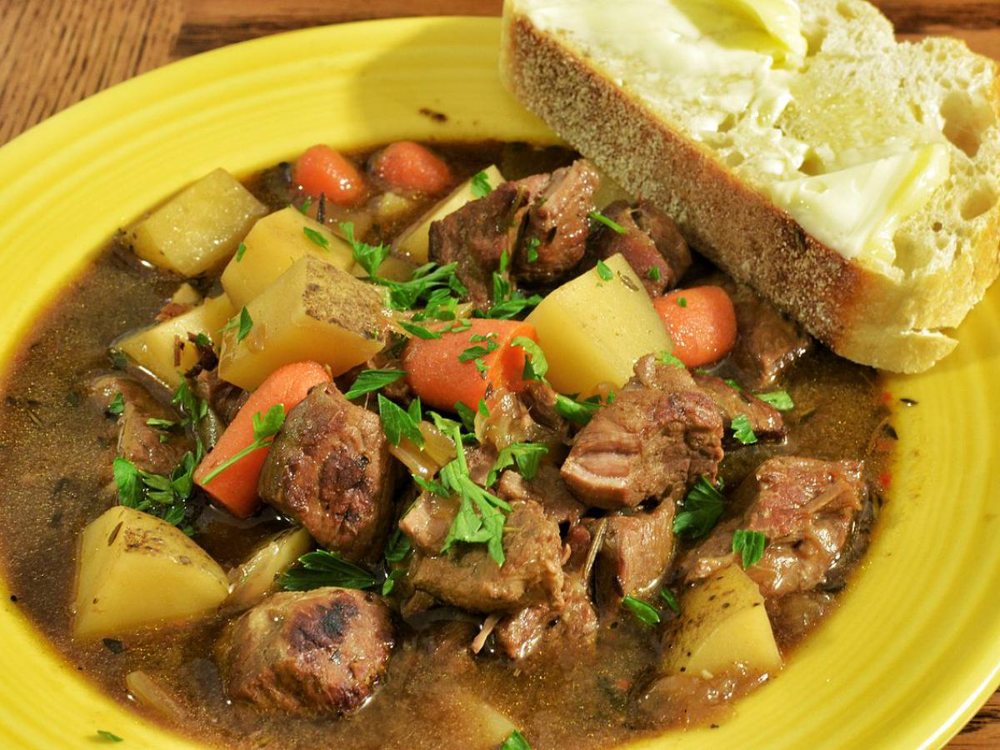

Home
Beef Stew

Description
A stew made with slow-cooked meats, root vegetables, and a mix of earthy spices.
Ingredients
- 1 lb beef, cubed
- 2 onions, chopped
- 3 carrots, chopped
- 4 cups of beef broth
- 2 tbsp of butter
- 1tsp salt
- 1 tsp dried sage
- 1 tsp dried rosemary
Steps
- In a large pot, melt the butter. Add the onions and cook until softened.
- Add the meat and cook until browned on all sides.
- Stir in the vegetables and spices.
- Pour the beef broth, bring to a boil, the reduce the heat and let it simmer for 1-2 hours.
- Serve hot with a side of flatbread or rye bread.